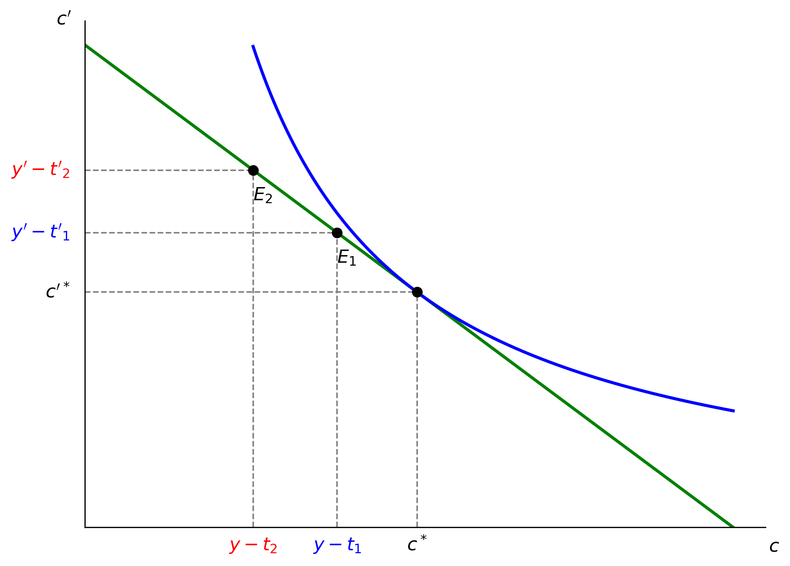
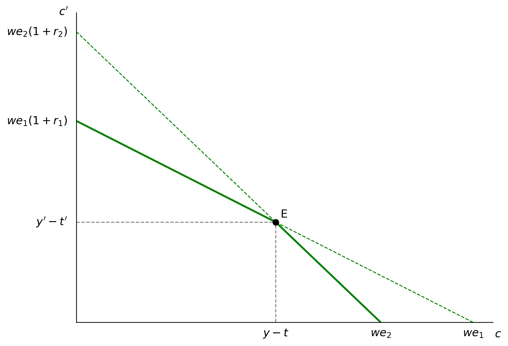
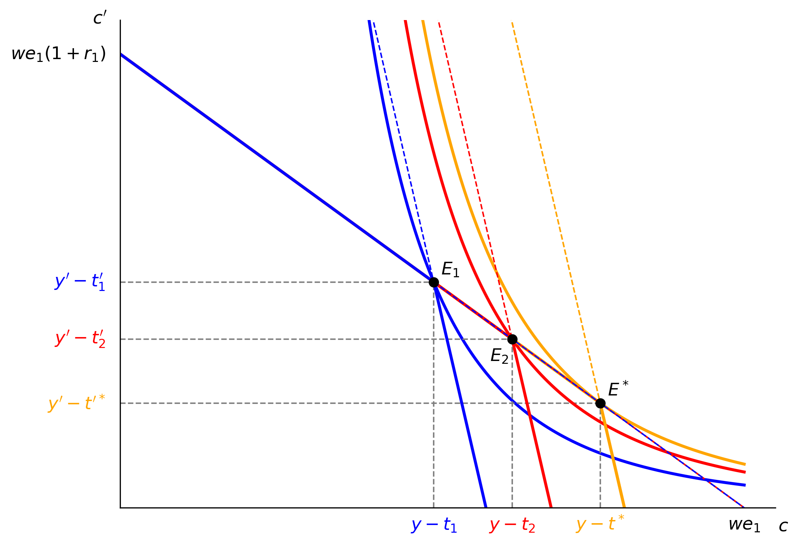
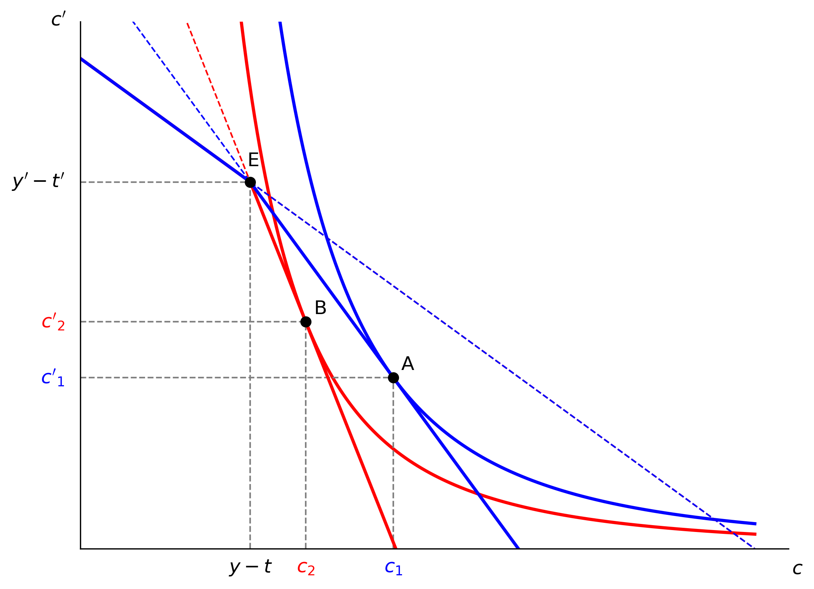
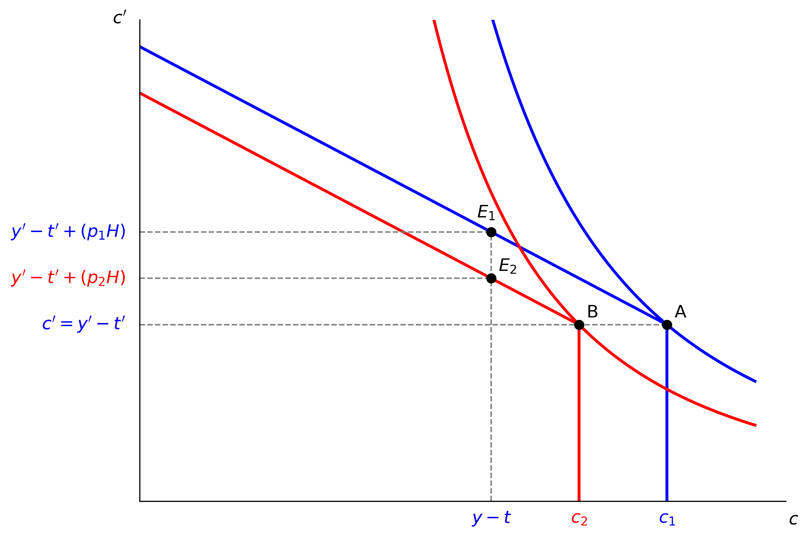
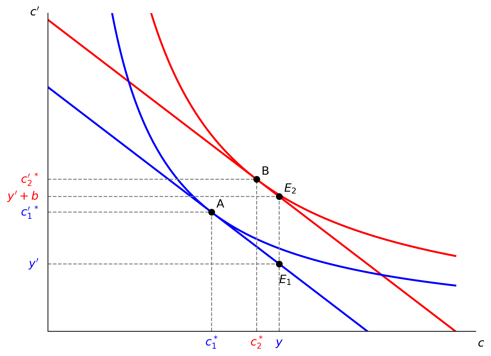
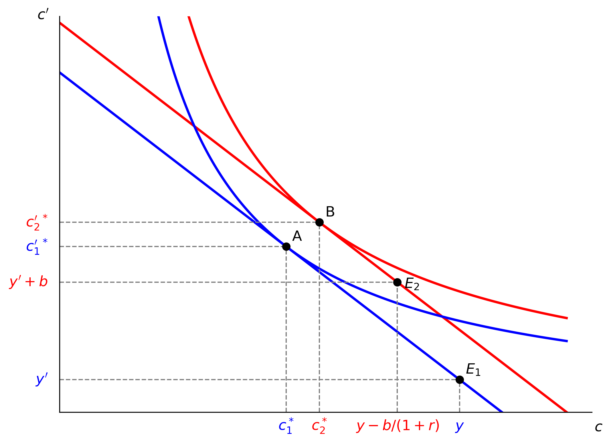
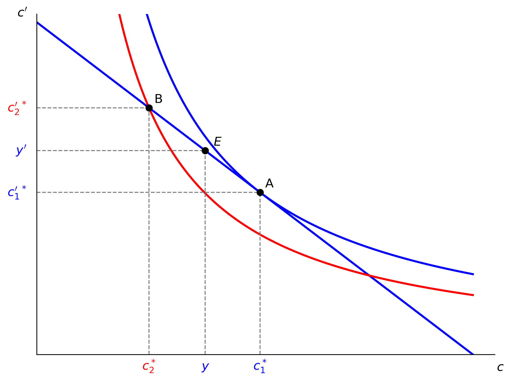

12. Model prídelovej ekonomiky a nedokonalosti na finančných trhoch#
V tejto kapitole skonštruujeme konkurenčnú rovnováhu v ekonomike, ktorá zodpovedá prostrediu opísanému v kapitole Spotrebiteľské rozhodovanie medzi súčasnosťou a budúcnosťou.
Prostredníctvom komparatívnej statiky analyzujeme Ricardovu ekvivalenciu, vplyv nedokonalostí na finančných trhoch na konkurenčnú rovnováhu a predstavíme systémy starobného dôchodkového zabezpečenia.
Zopakujme, že Spotrebiteľ žije v dvoch obdobiach. Na živobytie využíva prídel kompozitného statku v oboch obdobiach.
Statok slúži aj ako médium výmeny namiesto peňazí. Preto sú všetky premenné vyjadrené v reálnych jednotkách – v jednotkách spotrebného statku. Ide o reálny model bez peňazí.
Statok podlieha skaze v jednom období, ale spotrebiteľovi je povolené časť nespotrebovaného prídelu ušetriť a požičať inému spotrebiteľovi alebo vláde s úrokovou mierou \(r\).
12.1. Agregácia#
Nech v ekonomike žije \(N\) identických spotrebiteľov s rovnakými preferenciami (8.2) a rovnakým životným rozpočtom (8.7). Počet spotrebiteľov je konštantný v oboch obdobiach.
Keďže všetci spotrebitelia sú identickí, všetci majú rovnaký prídel \(\{y,y'\}\) a všetci sa rozhodnú pre rovnakú alokáciu \(\{c^*,c'^*,s^*\}\). Preto môžeme definovať agregované premenné.
Agregovaný prídel v prvom období je
v druhom období
Ak použijeme analógiu s banánmi, \(Y\) predstavuje celkovú úrodu banánov v prvom období a \(Y'\) v druhom. Rovnako ako o prídel ide o výstup zatvorenej ekonomiky, v ktorej sa spotrebitelia živia iba banánmi. V tomto jednoduchom modeli je agregovaný prídel zároveň agregovaným výstupom ekonomiky. Preto môžeme \(Y\) a \(Y'\) interpretovať ako \(HDP\) v prvom a druhom období.
Spotreba v oboch obdobiach je
a
Keďže všetci spotrebitelia majú rovnaké preferencie, príjmy a čelia rovnakej úrokovej miere, rozhodnú sa pre rovnakú výšku úspor
Poznamenajme, že ak
spotrebitelia sú veritelia. Predpokladáme, že za usporený prídel nakúpia dlhopisy.
Ak
spotrebitelia si musia na svoju spotrebu požičať prídel od veriteľa a sú dlžníci. Predpokladáme, že dlžník emituje dlhopisy, ktoré predá veriteľovi za pôžičku prídelu.
V druhom období dlžník spotrebiteľom za dlhopisy vráti úspory aj s úrokom.
- Trh dlhopisov
výmena prídelov za dlhopisy prebieha na trhu dlhopisov.
Trh dlhopisov nazývame aj finančný trh.
Pri týchto predpokladoch si spotrebitelia navzájom nepožičiavajú. Buď sú všetci spotrebitelia veritelia a neexistuje medzi nimi dlžník komu by mohli požičať. Alebo sú dlžníci a neexistuje medzi nimi veriteľ, od koho by si požičali.
V modeli ekonomiky potrebujeme ďalší subjekt; veriteľa, ak všetci spotrebitelia sú dlžníci, alebo dlžníka, ak všetci sú veritelia. Tretím subjektom je vláda.
V ekonomike zloženej výlučne z identických spotrebiteľov môže byť rovnováha na trhu dlhopisov dosiahnutá iba pri nulových agregovaných súkromných úsporách. Zavedenie vlády vytvára dodatočného dlžníka alebo veriteľa a umožňuje existenciu nenulových súkromných úspor.
Každý spotrebiteľ platí vláde paušálnu daň v oboch obdobiach \(\{t,t'\}\).
12.2. Vláda#
Celkový výber daní v oboch obdobiach je
a
Výbery \(T\) a \(T'\) sú čisté daňové príjmy vlády.
Spotrebu vlády v oboch obdobiach označíme \(\{G,G'\}\).
Odvodíme životný vládny rozpočet.
Príjmy vlády v prvom období sú \(T\). Spotreba vlády je \(G\). V dvoch obdobiach vláda môže emitovať alebo nakúpiť dlhopisy v hodnote \(B\).
Ak
predpokladáme, že vláda je dlžník. Emituje dlhopisy, ktoré na trhu dlhopisov predá spotrebiteľom za prídel.
Ak
predpokladáme, že vláda je veriteľ. Od spotrebiteľov kúpi dlhopisy na trhu dlhopisov za svoje úspory.
Rozpočet vlády v prvom období je
- Primárny prebytok / deficit verejného rozpočtu
sú verejné úspory \(T-G\)
Ak vláda realizuje primárny prebytok, časť výberu daní usporila,
vláda je veriteľ.
Ak vláda realizuje primárny deficit, na svoju spotrebu si časť požičala,
vláda je dlžník.
V druhom období je príjem vlády \(T'\), spotreba \(G'\). V druhom období vláda splatí svoj dlh vrátane úroku alebo získa späť svoje úspory vrátane úroku v hodnote \(B(1+r)\),
Súčasnú hodnotu životného rozpočtu získame kombináciou vládneho rozpočtového ohraničenia v oboch obdobiach (12.8) a (12.9)
Základné charakteristiky modelu sumarizuje tabuľka.
Charakteristika |
Hodnota |
|---|---|
Počet subjektov |
\(N+1\) |
Subjekty |
Spotrebitelia, vláda |
Počet období |
2 |
Typ prostredia |
Dynamické |
Počet trhov |
2 |
Trhy |
Trh produktov, trh dlhopisov |
12.3. Konkurenčná rovnováha#
- Konkurenčná rovnováha
Pri danom slede vládnych nákupov \(\{G,G'\}\), konkurenčná rovnováha je alokácia \(\{C,C'=Nc,Nc'\}\), objem vládneho dlhu \(B\) a úroková miera \(\{r\}\) taká, že
spotrebitelia sa správajú racionálne; riešia úlohu výberom \(\{c,c'\}\) maximalizovať funkciu užitočnosti (8.2) vzhľadom na životné rozpočtové ohraničenie (8.7), a podmienky nezápornosti (8.12),
vláda spĺňa svoje životné rozpočtové ohraničenie (12.10),
trh dlhopisov a trh produkcie sú v rovnováhe,
spotrebitelia sa správajú konkurenčne, t.j. považujú úrokovú mieru {r} za danú.
12.3.1. Rovnováha na trhoch#
Rovnováha na trhu dlhopisov vyžaduje, aby sa agregované súkromné úspory rovnali objemu vládnych dlhopisov
Ak
spotrebitelia sú veritelia a vláda je dlžník. Spotrebitelia kupujú dlhopisy od vlády.
Ak
spotrebitelia predávajú dlhopisy vláde.
Trh dlhopisov je v rovnováhe, ak platí (12.11). Podľa Walrasovho zákona (Walrasov zákon), ak je jeden z dvoch trhov v rovnováhe, a rozpočty všetkých subjektov sa spĺňajú ako rovnosť aj druhý trh je v rovnováhe.
Rozpočet každého spotrebiteľa v prvom období je (8.5). Vynásobením počtom spotrebiteľov \(N\) získame
Po dosadení vládneho rozpočtu (12.8) a využití podmienky rovnováhy na trhu dlhopisov (12.11) získame
Po úprave získame rovnováhu na trhu produktov v prvom období
12.3.2. Identity SNÚ#
Naša ekonomika je prídelová a zatvorená. Neexistuje výroba a kapitál, neexistujú investície,
Neexistujú vzťahy so zvyškom sveta,
a \(Y\) možno interpretovať aj ako \(HDP\) aj ako agregovaný príjem.
Podmienku rovnováhy na trhu produktov (12.12) možno interpretovať ako identitu systému národných účtov (10.2), v ktorej výstup ekonomiky tvorí súčet jednotlivých zložiek agregátneho dopytu.
Vynásobením individuálnych rozpočtov spotrebiteľov (8.5) počtom \(N\) získame identitu rozdelenia agregovaného príjmu (10.3) v tvare
V ekonomike sú nenulové súkromné a verejné úspory. Národné úspory sú ich súčet \(S+T-G\). Dosadením vládneho rozpočtu (12.8) a podmienky rovnováhy na trhu dlhopisov (12.11), sa národné úspory rovnajú
Preto sa spĺňa aj identita úspor a investícií (10.4), pričom obidve strany identity sa rovnajú 0.
12.4. Ricardova ekvivalencia#
V kapitole (Statický model všeobecnej rovnováhy) sme ukázali, že zvýšenie vládnych nákupov je nákladné v tom, že vytláča súkromnú spotrebu. Avšak nemohli rozlíšiť vplyv zmeny daní od vplyvu zmeny vládnych nákupov, pretože vláda si nemohla v statickom modeli požičiavať.
V dynamickom modeli to už neplatí a tak môžeme nezávisle zhodnotiť vplyv zmeny vládnych nákupov a vplyv zmeny daní.
Poukážeme na teóriu Ricardovej ekvivalencie (rovnosti). Podľa nej súčasné daňové škrty sú neutrálne na súkromnú spotrebu, pokiaľ sa nezmení vládna spotreba \(G\). Teória Ricardovej ekvivalencie bola pôvodne načrtnutá Ricardom (1817) a neskôr formalizovaná Barrom (1974) [Bar74, Ric17].
Ricardova ekvivalencia vyžaduje dokonalé finančné trhy, úplné informácie a presvedčenie spotrebiteľov, že vláda v budúcnosti splní svoje rozpočtové obmedzenie.
Životný rozpočet vlády je (12.10). Na ľavej strane je súčasná hodnota všetkých vládnych výdavkov. Na pravej strane súčasná hodnota všetkých vládnych príjmov. Ak sa nezmení \(G\) alebo \(G'\), nezmení sa hodnota ľavej strany a nezmení sa ani hodnota pravej strany.
Predpokladajme, že sa vláda rozhodne znížiť daň \(T\) v prvom období, ale neplánuje zmeniť svoju spotrebu \(\{G,G'\}\). Preto sa nemôže zmeniť hodnota ľavej a pravej strany (12.10). Aby vláda mohla financovať nezmenenú spotrebu, bude nútená v ďalšom období zvýšiť daň \(T'\).
Konkrétne, ak je daňový škrt \(X\), zvýšenie daní v druhom období bude \(X(1+r)\). Nezmení sa súčasná hodnota vládnej spotreby za život spotrebiteľov. Nezmení sa ani súčasná hodnota daňových výberov za život spotrebiteľov.
V Arrowovom-Debreuovom svete sú všetky informácie úplné. Spotrebiteľ vie, že vláda svoju spotrebu nezmení \(\{G,G'\}\). Vie že ak v prvom období platí o \(x=X/N\) menej daní, pri nezmenenej vládnej spotrebe bude musieť v ďalšom období zaplatiť viac daní o \(x(1+r)\) jednotiek.
Daňový škrt \(x\) nespotrebuje, ale zvýši si ním úspory. V ďalšom období získa za ušetrenú extra porciu \(x(1+r)\). Spotrebiteľovi sa nezmení životné bohatstvo \(we\) a pri nezmenenej úrokovej miere nezmení svoj dynamický kôš \(\{c,c'\}\).
Daňový škrt vlády bez zmeny vládnej spotreby má vplyv iba na úspory, ale nie na spotrebu.
Matematicky môžeme Ricardovu ekvivalenciu zapísať formuláciou životného bohatstva, ktoré závisí iba od vládnej spotreby \(\{G,G'\}\).
Podeľme životný rozpočet vlády (12.10) počtom spotrebiteľov
Po úpravách získame súčasnú hodnotu daňových platieb spotrebiteľa
Dosaďme ju do spotrebiteľovho životného bohatstva (8.8)
Presvedčili sme sa, že spotrebiteľovo životné bohatstvo závisí od vládnej spotreby \(\{G,G'\}\). Spotrebiteľ chápe, že nižšie dane dnes znamenajú vyššie dane v budúcnosti. Daňový škrt preto nevníma ako zvýšenie svojho bohatstva, ale iba ako zmenu časového rozloženia daňových platieb. Vláda môže spotrebiteľovi zvýšiť bohatstvo, iba ak obmedzí svoju spotrebu v prvom alebo druhom období.
Na Obr. 12.1 je spotrebiteľov prídelový bod \(E_1\). Spotrebiteľov dynamický kôš je \([c^*,c'^*]\). Spotrebiteľove úspory sú rozdiel medzi prídelom po zdanení a spotrebou
Ak vláda spotrebiteľovi zníži daň v prvom období z \(t_1\) na
a zároveň zvýši spotrebiteľovi daň v druhom období,
prídelový bod sa posunie z \(E_1\) do \(E_2\). Nezmení sa spotrebiteľovo životné bohatstvo, lebo sa mu nezmení súčasná hodnota daňových platieb
Životné bohatstvo sa stále rovná
Keďže sa nemení životné bohatstvo \(we\) ani úroková miera \(r\) , nemení sa ani optimálny spotrebný plán \([c^*,c'^*]\), ale keďže sa zvýši \(y-t\), spotrebiteľ zvýši úspory
Spotrebiteľ zmení úspory, ale nezmení spotrebný plán.
V Arrowovom-Debreuovom prostredí spôsob financovania vládnej spotreby nemá význam. Pre spotrebiteľa je dôležitá iba jej súčasná hodnota, nie to, či je financovaná súčasnými alebo budúcimi daňami.

Obr. 12.1 Ricardova ekvivalencia#
12.5. Úroková prirážka#
Platnosť Ricardovej ekvivalencie predpokladala, že dlžník aj veriteľ sa rozhodujú podľa rovnakej úrokovej miery, čo zodpovedá prostrediu podľa Arrowa a Debreuva.
V skutočnom svete finančné trhy nie sú dokonalé. Dlžníci si zvyčajne požičiavajú za vyššiu úrokovú mieru \(r_2\). Úspory veriteľov sú zvyčajne ohodnotené nižšou úrokovou mierou \(r_1\), pričom \(r_2>r_1\).
- Úroková prirážka
Rozdiel úrokovej miery za ktorú si požičiavajú dlžníci a úrokovej miery, pri ktorej sú zhodnotené pôžičky veriteľov, \(r_2 - r_1\).
Kladná úroková prirážka
je nedokonalosť finančného trhu.
Životné bohatstvo veriteľa je
Životné bohatstvo dlžníka je
Na Obr. 12.2 je zobrazená hranica spotrebiteľských možností. Prídelový bod je označený symbolom \(E\).
Naľavo os bodu \(E\) je spotrebiteľ veriteľom a nakupuje dlhopisy s úrokovou mierou \(r_1\). Absolútna hodnota sklonu hranice spotrebiteľských možností je preto \(1+r_1\).
Napravo od prídelového bodu \(E\) je spotrebiteľ dlžníkom a emituje dlhopisy s úrokovou mierou \(r_2\). Absolútna hodnota sklonu hranice spotrebiteľských možností je \(1+r_2\).
Keďže
hranica spotrebiteľských možností je po častiach lineárna. Naľavo od prídelového bodu \(E\) je plochšia, napravo od bodu \(E\) je strmšia.

Obr. 12.2 Dynamická hranica spotrebiteľských možností s úrokovou prirážkou#
Spotrebiteľ, sa na Obr. 12.3 rozhodne pre spotrebný plán v prídelovom bode \(E_1\),
a
Ak by žil v dokonalom svete Arrowa a Debreua, v ktorom \(r_2=r_1\), bol by veriteľom. Podľa jeho preferencií sa indiferenčná krivka dotkne hranice spotrebiteľských možností s absolútnym sklonom \(1+r_1\) v bode \(E^*\). Vo svete s nedokonalým finančným trhom sa však rozhodne žiť len z vlastného prídelu, lebo úroková miera \(r_2\) je príliš vysoká, aby sa mu oplatilo eitovať dlhopisy.
V bode \(E_1\) je jeho blahobyt nižší ako v \(E^*\), indiferenčná krivka je bližšie k začiatku súradnovocého systému.
Spotrebiteľovo bohatstvo je
Ak predpokladáme, že vláda má dostatočnú ekonomickú silu, dokáže si požičať za nižšiu úrokovú mieru \(r_1\). V skutočnom svete sú vládne dlhopisy zhodnotenné nižším výnosom.
Vláda môže uvedenému spotrebiteľovi pomôcť daňvým škrtom bez úpravy spotrebného plánu \(\{G,G'\}\).
Predpokladajme, že vláda zníži daň v prvom období o \(x>0\) jednotiek
Ak neupraví svoj spotrebný plán, v druhom období bude nútená zvýšiť daň o \(x(1+r_1)\),
Spotrebiteľovi na Obr. 12.3, ktorý spotrebuje svoj prídel sa zmení prídelový bod z \(E_1\) na \(E_2\).
a
Spotrebiteľovo bohatstvo sa zmení na
Spotrebiteľovi sa zvýši bohatstvo a je spokojnejší. Vláda mu daňovým škrtom pomohla, ani nemusela zmeniť svoj spotrebný plán. Je to preto, že vláda znížila svoje úspory zhodnotené nižšou úrokovou mierou \(r_1\) v prospech spotrebiteľa, ktorý by si musel znížiť úspory drahšie. Vláda si požičala namiesto spotrebiteľa, ktorý čelí privysokej úrokovej miere.
Pokiaľ až môže vláda spotrebiteľovi pomôcť daňvými škrtmi bez úpravy vlastnej spotreby?
Optimálna paušálna daň pre spotrebiteľa na Obr. 12.3 je \(t^*\) označená oranžovou farbou. Pri tejto hodnote paušálnej dane sa spotrebiteľov prídelový bod zhoduje s optimálnym spotrebným plánom v Arrowovom Debreuovom svete \(E^*\).
Bod \(E^*\) je spotrebiteľov optimálny plán. Ak by vláda Ďalej znižovala paušálnu daň pod hodnotu \(t^*\), spotrebiteľ by sa stal veriteľom. Dodatočný disponibilný príjem by už nevyužil na zníženie zadlženia, ale na nákup dlhopisov zhodnotených úrokovou mierou \(r_1\).

Obr. 12.3 Vplyv daňvého škrtu bez zmeny verejnej spotreby v ekonomike, v ktorej si vláda požičiava pri nižšej úrokovej miere#
12.6. Asymetrické informácie#
Prečo je úroková miera dlžníkov vyššia ako úroková miera veritľov?
V skutočnom svete medzi dlžníkmi existuje skupina neplatičov, ktorí nesplatia dlh. Dôvodom môžu byť charakterové vlastnosti alebo zlý odhad neplatičov.
Označme podiel dlžníkov, ktorí splatia dlh na všetkých dlžníkov symbolom \(a\), \(0\le a \le 1\). Podiel neplatičov na dlžníkov je \(a\).
- Asymetrické informácie
subjekty nemajú informáciu, kto sú neplatiči.
Význam bánk v skutočnom svete
Banky sú finančným sprostredkovateľom – požičiavajú dlžníkom a spravujú úspory veriteľom.
Banky minimalizujú riziko – keďže požičiavajú veľkému počtu dlžníkov vedia neskreslene odhadnúť podiel \(𝑎\). Nemajú informáciu, kto sú neplatiči, ale koľko ich je.
Banky nevedia identifikovať naplatičov. Všetci dlžníci vrátane neplatičov sú identickí a získajú rovnako veľký úver \(L\). Banka znáša riziko, že niektorí dlžníci dlh nesplatie. Preto poskytuje úvery s vyššou úrokovou mierou ako vklady \(r_1<r_2\).
Odvoďme úrokovú mieru \(r_2\), pri ktorej sa zisk banky rovná 0.
Pre každých \(L\) jednotiek vkladov, banka bude musieť v druhom období vrátiť banka splatiť \(L(1+r_1)\) veriteľom. Budúca hodnota nákladov banky je \(L(1+r_1)\).
Pre každých \(L\) jednotiek úveru, sa banke vráti \(aL(1+r_2)\) dlžníkov, ktorí poctivo splatia úver. Budúca priemerná hodnota príjmu banky je \(aL(1+r_2)\).
Budúca priemerná hodnota zisku banky je:
Pri \(\pi=0\)
odkiaľ
a teda
Všimnite si
Ak
všetci dlžníci splatia svoje záväzky a platí
Úroková prirážka vzniká iba vtedy, ak existuje kladná pravdepodobnosť nesplatenia úveru.
Aby banka pokryla straty spôsobené nesplatenými úvermi, musí od dlžníkov, ktorí svoje záväzky splácajú, požadovať vyššiu úrokovú mieru. Úroková prirážka preto predstavuje cenu za kreditné riziko vyplývajúce z asymetrických informácií.
12.7. Vplyv zvýšenia podielu neplatičov na spotrebiteľský plán dlžníka#
Ak sa zvýši podiel neplatičov na trhu dlhopisov, zníži sa podiel dlžníkov, ktorí svoje záväzky splatia, teda parameter \(a\).
Zo vzťahu (12.13) vyplýva, že pokles \(a\) vedie k rastu úrokovej miery \(r_2\).
Vplyv zvýšenia úrokovej miery na dlžníka sme už analyzovali (pozri pravý panel na Obr. 8.4). Dlžník v dôsledku dynamického substitučného aj príjmového efektu zníži spotrebu v prvom období a klesne jeho blahobyt.
Na Obr. 12.4 zvýšenie podielu neplatičov spôsobí rast úrokovej miery \(r_2\). Hranica spotrebiteľských možností napravo od prídelového bodu \(E\) sa preto stane strmšou. Dlžník zmení svoj optimálny plán z bodu \(A\) do bodu \(B\). Dlžníkov blahobyt klesne.

Obr. 12.4 Vplyv zvýšenia podielu neplatičov na spotrebný plán dlžníka#
Finančná kríza v USA v roku 2008
Jednou z príčin finančnej krízy v USA bolo podcenenie rizika nesplatenia hypoték. Finančné inštitúcie poskytovali úvery domácnostiam s vysokým kreditným rizikom a investori nakupovali cenné papiere kryté týmito hypotékami.
V jazyku nášho modelu sa finančné trhy správali, akoby podiel dlžníkov, ktorí svoje záväzky splatia, \(a\), bol vyšší než v skutočnosti. Preto bola úroková miera dlžníkov \(r_2\) príliš nízka.
Po poklese cien nehnuteľností sa ukázalo, že počet neplatičov je vyšší, než sa očakávalo. Odhad parametra \(a\) sa znížil, vzrástla požadovaná úroková miera \(r_2\) a mnohí dlžníci stratili prístup k financovaniu. Následne sa finančné problémy preniesli do celého bankového systému.
12.8. Hypotekárne úvery#
Pre zjednodušenie sa vráťme do prostredia s jedinou úrokovou mierou \(r\).
Ďalší spôsob, akým sa banky snažia poistiť pred rizikom nesplatenia dlhov je, že pre poskytnutie úveru vyžadujú záruku. Záruka môže mať podobu hmotného majetku. Dlžník uchádzajúci sa o úver ručí za jeho splatenie časťou svojho majetku. Ak nesplatí dlh, časť majetku pripadne banke.
Najčastejšie dlžníci ručia nehnuteľnosťou. Hypotekárne úvery sú úvery, v ktorých dlžník ručí nehnuteľnosťou.
Hypotekárne úvery sú prirodzený spôsob financovania bývania. Hlavne na Slovensku sú často využívané. Slúžia aj podnikateľom, ktorí si potrebujú požičať pre svoju aktivitu.
Upravme model dynamického rozhodovania spotrebiteľa, ktorý vlastní nehnuteľnosť. Objem vlastnenej nehnuteľnosti označíme symbolom \(H\). Jeho odhadovaná cena v druhom období je \(p\). Súčasná hodnota jeho životného bohatstva je
Predpokladajme v našom modeli, že dlžník si nesmie požičať viac, ako je súčasná hodnota jeho nehnuteľnosti
Preto jeho spotreba nemôže byť vyššia ako súčet jeho súčasného príjmu po zdanení a súčasnej hodnoty nehnuteľnosti.
Rovnica (12.15) ohraničuje spotrebiteľovu hranicu spotrebiteľských možností. Na Obr. 12.5 predstavuje ohraničenie (12.15) kolmá modrá čiara. Hranica spotrebiteľských možností je klesajúca kým nedosiahne bod maximálnej možnej súčasnej spotreby v bode \(A\), od ktorého pokračuje kolmo nadol.
Ak by sa spotrebiteľ rozhodol spotrebovať svoj súčasný prídel po zdanení \(y-t\), v druhom období by spotreboval budúci prídel aj s hodnotou nehnuteľnosti \(y'-t'+pH\). Prídelový bod vrátane hodnoty záruky v druhom období je
To je bod, v ktorom spotrebiteľ nevstupuje na trh dlhopisov. Ak spotrebiteľ nevstúpi na finančný trh, v druhom období okrem príjmu spotrebuje aj hodnotu svojej nehnuteľnosti.
Ak sa zníži cena spotrebiteľovej nehnuteľnosti z \(p_1\) na \(p_2\), spotrebiteľ sa stane chudobnejší. Životné bohatstvo (12.14) klesne. Na Obr. 12.5 sa prídelový bod posunie dole z \(E_1\) na \(E_2\). Hranica spotrebiteľských možností sa posunie dole z modrých čiar na červené.
Spotrebiteľ vyberie taký dynamický spotrebný plán \(\{c,c'\}\), ktorým maximalizuje svoju užitočnosť (8.2) vzhľadom na
a (12.15) a nezápornosť (8.12), pričom súčasná hodnota spotrebiteľovho životného bohatstva je (12.14).
Na Obr. 12.5 je modrou farbou prezentovaný dlžník, ktorý si požičiava na hranici súčasnej hodnoty svojho bohatstva v prvom období
V druhom období spotrebuje svoj budúci príjem
Optimálny pre neho je ešte vyšší dlh, ale ohraničenie súčasnou hodnotou jeho záruky mu to nepovolí.
Čo sa stane, ak sa zníži cena jeho nehnuteľnosti?
Dlžník zmení svoj spotrebný plán z bodu \(A\) do bodu \(B\). Je nútený obmedziť svoje zadlženie a jeho spotreba v prvom období klesne na
Spotreba v druhom období zostáva nezmenená. Spotrebiteľovi sa zníži životné bohatstvo aj blahobyt.

Obr. 12.5 Vplyv zníženia ceny nehnuteľnosti, ktorou veriteľ ručí na jeho spotrebný plán#
Finančná kríza 2008
Pred finančnou krízou v USA boli mnohé domácnosti financované hypotekárnymi úvermi. Rast cien nehnuteľností zvyšoval hodnotu záruky \(pH\), a preto banky poskytovali čoraz väčšie úvery.
Po poklese cien nehnuteľností sa znížila hodnota záruky. Mnohé domácnosti už nemohli získať nové úvery alebo refinancovať existujúce hypotéky. Pokles cien nehnuteľností preto viedol k poklesu spotreby domácností a prispel k hospodárskej recesii.
V jazyku nášho modelu pokles ceny nehnuteľnosti znižuje životné bohatstvo \(we\) a zároveň sprísňuje ohraničenie
12.9. Systémy dôchodkového zabezpečenia#
Systémy dôchodkového zabezpečenia ponúka vláda. Ich účelom je zabezpečiť pracujúcim príjem na financovanie spotreby po ukončení ekonomickej aktivity.
Existujú dva hlavné typy systémov: systém priebežného zabezpečenia a fondový systém.
- Priebežný systém
dôchodky sú financované z aktuálnych príspevkov pracujúcej generácie. Ide o systém transferov medzi mladou a starou generáciou.
- Fondový systém
pracujúci počas ekonomickej aktivity povinne alebo dobrovoľne sporia. Úspory sú investované do aktív a dôchodky sú následne financované z výnosov a postupného čerpania nahromadeného majetku.
Na Slovensku funguje kombinovaný systém dôchodkového zabezpečenia. Priebežný systém sa označuje ako prvý pilier a fondový systém ako druhý pilier dôchodkového zabezpečenia.
Najskôr si predstavme ekonomické prostredie, ktoré možno vysvetliť modelom s dvoma generáciami spotrebiteľov. Ak predpokladáme, že objem obyvateľstva rastie mierou \(n\), počet starších spotrebiteľov je \(N\), platí, že počet mladších spotrebiteľov je
Spotrebitelia žijú dve obdobia, ale model nemá určený časový horizont. Spotrebitelia sa objavia v období \(t\). V tomto období sú mladší. V období \(t+1\) sa stanú staršími a objaví sa \(1+n\) násobok nových mladších spotrebiteľov.
Predpokladajme najskôr, že neexistuje vláda a neexistuje organizovaný systém dôchodkového zabezpečenia.
Každý spotrebiteľ má rovnaké životné bohatstvo
Možnosti spotrebiteľov sú
Na Obr. 12.6, Obr. 12.7 a Obr. 12.8 je hranica spotrebiteľských možností zobrazená modrou čiarou. Spotrebiteľov prídelový bod je \(\left[y,y'\right]\).
Vyberie si spotrebný plán \(\{c,c'\}\), aby maximalizoval svoju užitočnosť (8.2) vzhľadom na (12.18), (12.17) a nezápornosť (8.12).
Na Obr. 12.6, Obr. 12.7 a Obr. 12.8 je optimálny spotrebný plán zobrazený ako bod dotyku modrej indiferenčnej krivky a hranice spotrebiteľských možností.
Čo sa stane, ak spotrebitelia v tomto okamžiku zriadia vládu, aby zaviedla priebežný systém dôchodkového zabezpečenia?
12.9.1. Priebežný systém#
V priebežnom systéme sú odvody na starobné poistenie od aktívnych pracujúcich využité na financovanie starobných dôchodkov.
Pre zjednodušenie predpokladajme, že dôchodkové zabezpečenie nemá vplyv na trhovú úrokovú mieru r, ktorá je konštantná v každom období.
Čo sa stane, ak sa v jednom období (označme ho obdobie \(T\)) vláda rozhodne zaviesť priebežný systém v krajine, v ktorej pred tým nebol nijaký systém dôchodkového zabezpečenia? Od obdobia \(T\) bude v krajine už navždy priebežný systém.
Každý starší spotrebiteľ od obdobia \(T\) a neskôr získa dôchodok v hodnote \(b\) jednotiek spotrebného tovaru. Každý mladší spotrebiteľ zaplatí odvod (daň) \(t\) v prvom období života. V druhom období života získa dôchodok \(b\).
Dôchodok každého dôchodcu je financovaný daňami aktívnych spotrebiteľov a predpokladáme, že každý mladší spotrebiteľ platí rovnakú čiastku dane \(t\). Keďže súčet všetkých dôchodkových platieb sa rovná všetkým daňovým príjmom v každom období, platí:
Dosadením populačného rastu (12.16) do (12.19) a odvodením \(t\) získame vzťah medzi odvodom a dôchodkom
Ak populácia rastie, \(n>0\), odvod \(t\) je nižší ako dôchodok \(b\).
Aký je prínos systému zabezpečenia pre spotrebiteľov? Starší spotrebitelia v období zavedenia systému \(T\) získajú dôchodok bez toho, aby v minulosti platili odvody. Prvá generácia dôchodcov preto získa jednorazový transfer od pracujúcej generácie. Starší spotrebitelia sú v období \(T\) čistí príjemcovia. O čiastku \(b\) sa im zvýši životné bohatstvo.
Na Obr. 12.6 sa staršiemu spotrebiteľovi príjmovým efektom posunie hranica spotrebiteľských možností z modrej čiary do červenej.
Prídelový bod staršieho spotrebiteľa sa posunie z bodu \(E_1\) do \(E_2\). V druhom období sa mu zvýši príjem o \(b\) jednotiek.
Spotrebiteľský plán sa zmení z bodu \(A\) do bodu \(B\). Blahobyt staršieho spotrebiteľa sa zvýši.

Obr. 12.6 Zmena spotrebného plánu staršieho spotrebitelia po zavedení priebežného systému dôchodkového zabezpečenia#
Mladší spotrebitelia odvedú \(b/(1+n)\) jednotiek v 1. období a získajú \(b\) jednotiek v 2. období. Ich životné bohatstvo bude
Dosadením životného bohatstva v prostredí bez dôchodkového systému a po úprave získame
Posledný výraz na pravej strane rovnice (12.21) predstavuje zmenu životného bohatstva mladšieho spotrebiteľa v období \(T\). Táto zmena je kladná alebo záporná, podľa toho, či je miera rastu práce vyššia alebo nižšia ako úroková miera.
Ak \(n > r\), životné bohatstvo a blahobyt aktívneho spotrebiteľa sa zvýši.
Naopak, ak \(n < r\), jeho životné bohatstvo sa zníži.
Nezmení sa ak, \(n = r\).
Na Obr. 12.7 je zobrazená zmena plánu mladšieho spotrebiteľa v období \(T\), v prípade ak \(n > r\). Modrá hranica spotrebiteľských možností sa zavedením priebežného systému posunie doprava do červenej.
Prídelový bod mladšieho spotrebiteľa sa posunie z bodu \(E_1\) do \(E_2\). V prvom období sa jeho príjem zníži o \(b/(1+n)\), ale, na druhej strane, v druhom období bude jeho príjem vyšší o \(b\) jednotiek.
Spotrebný plán sa posúva z bodu \(A\) do bodu \(B\). Ak \(n > r\), zvýši sa mu blahobyt.
Priebežný systém poskytuje implicitný výnos približne rovný miere rastu populácie \(n\). Preto je výhodný vtedy, keď je miera rastu populácie vyššia ako trhová úroková miera \(r\).

Obr. 12.7 Zmena spotrebného plánu mladšieho spotrebiteľa po zavedení priebežného systému dôchodkového zabezpečenia za predpokladu \(n>r\)#
Myšlienka, že priebežný dôchodkový systém môže zvyšovať blahobyt pri dostatočne vysokej miere rastu populácie, pochádza z práce Samuelsona (1958) [Sam58].
Z priebežného systému bude profitovať každý spotrebiteľ, pokiaľ je miera rastu populácie väčšie ako úroková miera. V opačnom prípade si polepšia iba starší spotrebitelia v období na úkor mladších a na úkor každej budúcej generácie.
Dôvod, prečo systém dôchodkového zabezpečenia potenciálne môže zlepšiť blahobyt je, že existuje spôsob zlyhania dlhopisového trhu, ktorý vláda môže napraviť. Toto zlyhanie spočíva v skutočnosti, že bez priebežného systému dôchodkového zabezpečenia neexistuje možnosť, v ktorej by ľudia mohli obchodovať s tými, ktorí sa v danom období ešte nenarodili.
Tiež nemôžu obchodovať mladší spotrebitelia so staršími, keďže mladší spotrebitelia si žiadajú vymeniť súčasné spotrebné produkty za budúce a starší si žiadajú vymeniť súčasné spotrebné produkty za minulé.
Vláda má moc zdanením vytvoriť medzigeneračné transfery. Ak je miera rastu populácie vyššia ako úroková miera (\(n>r\)), tieto transfery môžu viesť Paretovmu zlepšeniu, pri ktorom sa všetkým súčasným aj budúcim spotrebiteľom zvýši blahobyt.
Slovenská populácia starne. Miera rastu populácie je dlhodobo nízka a nachádza sa pod úrovňou bežných trhových úrokových mier. V jazyku nášho modelu preto priebežný systém nezvyšuje životné bohatstvo budúcich generácií a môže znižovať ich blahobyt.
Aj to je dôvod, prečo Slovensko v roku 2005 zmenilo systém dôchodkového zabezpečenia. Do roku 2005 bol na Slovensku čisto priebežný systém dôchodkového zabezpečenia. Od roku 2005 je na Slovensku kombinovaný systém. Prvý pilier systému je priebežný a druhý fondový.
12.9.2. Fondový systém dôchodkového zabezpečenia#
Vo fondovom systéme spotrebiteľ povinne odvedie časť svojho prídelu \(t\). Možno ju interpretovať ako povinné úspory, ktoré sú v druhom období zhodnotené úrokovou mierou \(r\).
V druhom období má spotrebiteľ príjem \(t(1+r)\)
V realite si povinne zvolí správcovskú spoločnosť, ktorá spotrebiteľove povinné úspory priebežne investuje do fondov.
Za predpokladu dokonalých finančných trhov sa spotrebiteľove životné bohatstvo v porovnaní s prípadom bez dôchodkového zabezepečenia nezmení (12.17).
Spotrebiteľ zvolí rovnaký spotrebný plán. Jeho blahobyt sa nezmení. Na Obr. 12.8 je spotrebiteľov plán prezentovaný bodom \(A\).
Čo ak sú spotrebiteľove optimálne úspory \(s^*\) nižšie, ako povinné? Pri dokonalých finančných trhoch si spotrebiteľ nepohorší. Rozdiel \(t-s*\) si požičia proti svojim budúcim dôchodkovým nárokom za rovnakú úrokovú mieru \(r\) a v druhom období pokryje svoj dlh zhodnotenými povinnými úspormi
Ale, ako sme uviedli vyššie (Úroková prirážka), v reálnom svete je prístup k finančným trhom individuálnemu spotrebiteľovi obmedzený.
Na Obr. 12.8 bod \(B\) prezentuje zmenu spotrebiteľovho plánu, ak sú povinné úspory vyššie ako optimálne a na rozdiel si nemôže požičať na trhu dlhopisov.
Optimálne úspory sú
Povinný odvod je
Spotrebiteľ je nútený spotrebovať \(c_2^*\). Nemení sa modrá hranica spotrebiteľských možností. Spotreba v druhom období je \(c_2'^*\) (bod \(B\)). Spotrebný plán v bode \(B\) nie je pre spotrebiteľa optimálny a jeho blahobyt je nižší. Červená indiferenčná krivka, ktorá prechádza bodom \(B\), je bližšie k začiatku súradnicového systému ako modrá.
Pri dokonalých finančných trhoch sa nemení hranica spotrebiteľských možností ani optimálny spotrebný plán. Povinné sporenie ovplyvňuje spotrebiteľa iba vtedy, ak mu finančné trhy neumožňujú požičať si proti budúcim dôchodkovým nárokom.

Obr. 12.8 Zmena spotrebného plánu spotrebiteľa, ktorý je vo fondovom systéme nútený šetriť viac, ako je pre neho optimálne bez možnosti vykryť nárast úspor pôžičkou#
12.9.3. Zhodnotenie systémov dôchodkového zabezpečenia#
Silný argument proti akejkoľvek politike sociálneho zabezpečenia ľudí v dôchodkovom veku získame, ak v našom uvažovaní nahradíme jednotlivých spotrebiteľov rodinami. Rodiny svojim správaním možno považovať za podobné entity ako štáty. Tiež si môžu zvoliť vlastné systémy dôchodkového zabezpečenia, podľa ich aktuálnej demografickej pozície a podľa aktuálnej úrokovej miery, za ktorú sa zhodnocujú rodinné úspory.
Možno predpokladať, že rodiny na rozdiel od štátu dokážu efektívne pružne meniť systém zabezpečenia podľa potreby. Niektorí autori argumentujú, že rozšírenie verejných dôchodkových systémov znížilo ekonomickú závislosť starších ľudí od ich detí a tým oslabilo význam rodinných medzigeneračných transferov.
Ďalší argument, je že vládou organizovaný systém dôchodkového zabezpečenia bol práve jednou z príčin zhoršenia demografie. Keďže v minulosti sa o svojich zostarnutých rodičov starali dospelé deti, rodiny mali tendenciu mať viac detí. Keď časť zabezpečenia príjmu v starobe prevzal verejný dôchodkový systém, mohla sa znížiť jedna z ekonomických motivácií mať väčší počet detí.
Ak je zlá demografická situácia príčinou neefektívnosti priebežného systému, samotná existencia priebežného systému zas môže byť príčinou zlej demografickej situácie.
Je teda potrebný systém dôchodkového zabezpečenia? Jedným z argumentov v jeho prospech je, že môže zvyšovať dôveryhodnosť hospodárskej politiky. Ak by vláda vopred oznámila, že ľuďom bez úspor neposkytne v starobe žiadnu pomoc, nemusí byť takýto sľub dôveryhodný. Očakávanie budúcich transferov môže viesť časť spotrebiteľov k nedostatočným úsporám počas ekonomicky aktívneho života.
- Teória dynamickej inkonzistencie hospodárskej politiky
Hospodárska politika je dynamicky inkonzistentná, ak plán, ktorý je optimálny z pohľadu vlády dnes, nemusí byť optimálny z pohľadu tej istej vlády v budúcnosti. Ak ľudia predpokladajú, že vláda svoj pôvodný plán neskôr zmení, prispôsobia tomu svoje správanie už dnes. V dôsledku toho môže byť pôvodne optimálna politika nedôveryhodná a viesť k horším ekonomickým výsledkom.
Teória dynamickej inkonzistencie hospodárskej politiky bola formalizovaná Kydlandom a Prescottom [KP77].
Dôležitým problémom hospodárskej politiky je jej dôveryhodnosť. V prostredí so záväzkom sa vláda dokáže zaviazať k prijatému plánu a v budúcnosti ho nemení. V prostredí bez záväzku môžu ľudia oprávnene očakávať, že vláda svoj plán neskôr prehodnotí. Tieto očakávania ovplyvňujú ich správanie a môžu spôsobiť, že pôvodne efektívna politika stratí účinnosť.
V prostredí so záväzkom neexistuje dôvod na politický systém dôchodkového zabezpečenia. Rodiny si dokážu samy zvoliť optimálny spotrebný a sporiaci plán a vláda nemusí zasahovať.
V prostredí bez záväzku je situácia odlišná. Časť spotrebiteľov môže očakávať, že vláda v budúcnosti nenechá starších ľudí bez prostriedkov na živobytie, aj keby to bolo v rozpore s jej pôvodným plánom. Títo spotrebitelia môžu počas ekonomicky aktívneho života sporiť menej, než by bolo optimálne. Keď sa následne ocitnú v dôchodkovom veku bez dostatočných úspor, vznikne na vládu politický tlak, aby im poskytla pomoc. Vláda preto môže prehodnotiť svoj pôvodný plán a zaviesť transfery pre starších spotrebiteľov. Práve možnosť takéhoto budúceho odklonu od pôvodnej politiky predstavuje problém dynamickej inkonzistencie.
Povinný dôchodkový systém môže existovať nie preto, že ľudia nevedia sporiť, ale preto, že vláda nevie dôveryhodne sľúbiť, že v budúcnosti nebude zachraňovať tých, ktorí si nenašetrili.
Ak by sme prijali argument, že systém dôchodkového zabezpečenia je nástroj, ktorý pomôže vláde k väčšej dôveryhodnosti, ktorý systém je lepší, priebežný alebo fondový?
Podľa modelu uvedeného v tejto časti je priebežný systém lepší iba vtedy, ak populácia rastie rýchlejšie než trhová úroková miera. V praxi však môžu pri fondovom systéme vznikať dodatočné problémy, ktoré model nezachytáva. Uvedieme dva príklady.
Prvý je, že verejné (alebo vládou kontrolované súkromné) penzijné fondy nie sú z politických dôvodov spravované efektívne. Prítomnosť obrovských aktív pod kontrolou verejnosti je terčom záujmu rôznych lobistických skupín a zákonodarcov. Podľa teórie sociálnej zodpovednosti investovania možno zmeniť správanie firiem smerovaním investícií preč od týchto firiem. Aj keď sociálne zodpovedné investovanie má vznešené ciele. Ale ak sú investície obmedzené netrhovými kritériami, môže sa znížiť investičná množina dostupná správcom fondov. V prípade, že takéto obmedzenia znižujú výnos pri rovnakom riziku, môžu viesť k nižším dôchodkom sporiteľov.
Druhý príklad je známy ako problém morálneho hazardu.
- Morálny hazard
je prvok v poisťovníctve, podľa ktorého jednotlivec zabezpečený proti konkrétnej strate je menej opatrný v jej predchádzaní.
Príklad morálneho hazardu môže byť vodič vlastniaci auto s havarijnou poistkou na akúkoľvek škodu. Tento vodič si pri parkovaní bude dávať menší pozor, ako keby nebol poistený.
V prípade fondového zabezpečenia predpokladajme, že systém povoľuje ľuďom vybrať si spôsob, akým si budú šetriť na dôchodok. Čo sa stane, ak sa jedinec rozhodne investovať do veľmi riskantných aktív, nebude mať šťastie a v dôchodkovom veku ostane chudobný?
V prostredí bez záväzku sa o neho pravdepodobne postará vláda. V konečnom dôsledku bude vláda čeliť politickým tlakom garantovať dôchodkové účty podobne, ako sú garantované vklady v bankách.
Problém vzniká preto, že vláda nemusí byť schopná dôveryhodne sľúbiť, že v budúcnosti nepomôže sporiteľom, ktorí prišli o významnú časť svojich úspor. Očakávanie budúcej pomoci môže meniť správanie sporiteľov aj správcov fondov už dnes.
Podobne ako v prípade bankových vkladov, ak budú garantované dôchodkové účty, manažéri správcovských fondov budú viac náchylní k riskovaniu s vedomím, že aj keď veľmi riskantná investícia neprinesie žiadaný výnos, sporiteľ získa garanciu.
V dôsledku toho môže vzniknúť potreba dodatočnej regulácie fondov a investičných stratégií. Takéto regulácie znižujú priestor pre morálny hazard, ale zároveň zvyšujú administratívne náklady systému. Pri porovnávaní priebežného a fondového systému je preto potrebné zohľadniť nielen výnosnosť investícií, ale aj náklady spojené s ich reguláciou a dohľadom.
Vzhľadom na časté argumenty ekonómov, podľa ktorých verejné dôchodkové systémy môžu oslabovať jednu z ekonomických motivácií mať deti, keďže časť zabezpečenia príjmu v starobe preberá štát, na Slovensku rezonovala diskusia o rodičovskom bonuse. Cieľom rodičovského bonusu bolo čiastočne prepojiť dôchodkové príjmy rodičov s ekonomickou aktivitou ich detí.
12.10. Neriešené príklady#
12.10.1. Príklad: Ricardova ekvivalencia#
Analyzujte správanie spotrebiteľa, ktorý žije dve obdobia na banánovom ostrove. Prídel spotrebiteľa v oboch obdobiach je 6. V oboch obdobiach platí vláde paušálnu daň 1. Trhová úroková miera je 5 %. Spotrebiteľove okamžité preferencie zodpovedajú funkcii užitočnosti (8.1). Diskontný faktor je \(50/51\).
Vypočítajte súčasnú hodnotu životného bohatstva a optimálny dynamický spotrebný plán.
V ekonomike žije 1000 identitických spotrebiteľov s rovnakými prídelmi a preferenciami ako sú uvedené v zadaní príkladu. Vypočítajte \(HDP\), spotrebu \(C\) a úspory \(S\).
Vláda rozhodla v prvom období všetkým spotrebiteľom odpustiť daň (1), ale neobmedzila svoju spotrebu. Akú výšku paušálnej dane očakávate v druhom období? Ak má spotrebiteľ rovnaké očakávania, ako sa mu zmení bohatstvo a spotrebný plán?
12.10.2. Príklad: Úroková prirážka#
Podiel neplatičov na všetkých dlžníkoch v hospodárstve je 2 %. Úroková miera vkladov je 3 %.
Vypočítajte úrokovú prirážku, ak komerčné banky banky správne odhadujú podiel neplatičov.
Ukázalo sa, že v hospodárstve je podiel neplatičov až 5 %. Ako sa zmení úroková prirážka?
12.10.3. Príklad: Problém záruky pri úveroch#
Aký objem hypotekárneho úveru môže banka poskytnúť dlžníkovi, ak disponuje nehnuteľnosťou v hodnote 210 a trhová úroková miera je 5 %?
Ako sa tento objem zmení, ak sa ceny nehnuteľností na trhu znížia o štvrtinu?
12.10.4. Príklad: Systémy dôchodkového zabezpečenia#
V ekonomike žijú dve generácie spotrebiteľov; mladší a starší. Obe generácie žijú dve obdobia; starší sú o obdobie starší. Každý zarobí v prvom období 303 a v druhom 202. Trhová úroková miera je 2 %. Okamžité preferencie zodpovedajú funkcii užitočnosti (8.1). Diskontný faktor je \(50/51\).
Vypočítajte súčasnú hodnotu životného bohatstva a dynamický plán spotrebiteľa.
Vláda sa rozhodla zaviesť priebežný dôchodkový systém. Každý senior má získať penzijný bonus v hodnote 20. Aké sú povinné paušálne odvody každého juniora, ak miera rastu populácie je 4 %? Ako sa zmení bohastvo a spotreba každého seniora v jeho poslednom roku žitia? Ako sa zmení životné bohatstvo každého juniora a jeho dynamický spotrebný plán?
Aké sú povinné paušálne odvody každého juniora, ak miera rastu populácie je 1 %? Ako sa zmení životné bohatstvo každého juniora a jeho dynamický spotrebný plán?
Keďže miera rastu populácie je nižšia ako úroková miera, vláda sa rozhodla nahradiť priebežný systém fondovým. Každý junior si musí povinne sporiť v prvom období. Aká je suma povinných úspor, ak ich vláda stanovila podľa optimálnej hodnoty úspor každého spotrebiteľa? Ako sa zmení životné bohatstvo každého spotrebiteľa a jeho dynamický spotrebný plán?